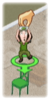

14 |
Aspectos básicos de la fase de construcción |
 |
Para asignar un trabajador a un objeto:
Selecciona un trabajador apuntándolo con el mando de Wii y manteniendo pulsado Ello te permitirá sujetar al trabajador y moverlo libremente por la casa.
Suelta
Si un trabajador construye un objeto marcado con su mismo color, el trabajo se realizará más rápido y el riesgo de lesiones disminuirá.
A medida que el equipo construye y el tiempo pasa, el Calendario irá descontando días hasta que no quede ninguno.
Si el Calendario llega a 0 días antes de que el equipo haya acabado de construir la casa, deberás reiniciar la Fase de construcción.
Puedes ayudar a un trabajador a construir un objeto apuntándole con el mando de Wii y manteniendo pulsado
Con
Ello permitirá al trabajador construir con más rapidez.
|
 Construir objetos:
Construir objetos: .
. A veces, los objetos aparecen con la silueta marcada con el color de uno de los trabajadores. Cuando ello ocurre, selecciona al trabajador del color de la silueta y asígnale el objeto en cuestión.
A veces, los objetos aparecen con la silueta marcada con el color de uno de los trabajadores. Cuando ello ocurre, selecciona al trabajador del color de la silueta y asígnale el objeto en cuestión. . Se mostrará la herramienta que está usando.
. Se mostrará la herramienta que está usando. Mantén los ojos abiertos por si los trabajadores necesitan ayuda, ya que dejarán de trabajar hasta que se la prestes.
Mantén los ojos abiertos por si los trabajadores necesitan ayuda, ya que dejarán de trabajar hasta que se la prestes. |
 |
 |